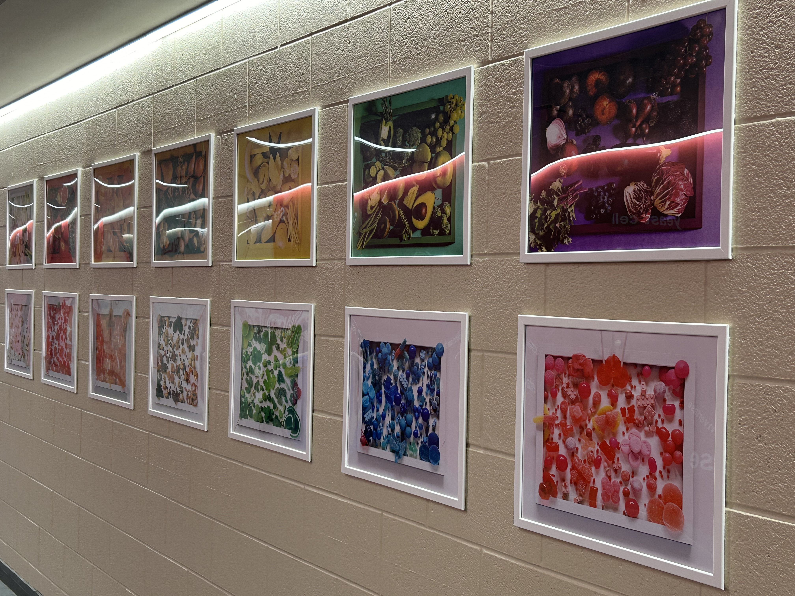

My Framed Collection by Krystal Moodie
CA$ 1,050
Description
The "My Framed" series captures the vivid colors of food, within the condines of a hand painted frame. It conveys the beauty of food, with all its imperfections, whilst limiting the contents to the confines of a frame.
Features
The "My Framed" collection features 14 captivating artworks, where each frame is hand-painted to complement and enhance the essence of the enclosed food item. This innovative concept seamlessly merges the worlds of paintings and photography, offering a unique perspective on how we perceive and appreciate food as both sustenance and art.
Dimensions
Each artwork - Width: 25cms Length: 20cms Thickness: 2cms
Add to Cart